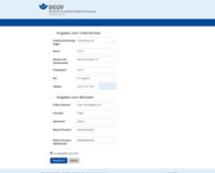

- GESTIS-Stoffdatenbank
- GESTIS-Biostoffdatenbank
- GESTIS-Stoffenmanager®
- ISi - Informationssystem für Sicherheitsdatenblätter
- GESTIS - Analysenverfahren für chemische Stoffe
- GESTIS - Internationale Grenzwerte
- GESTIS-DNEL-Liste
- GESTIS - Wissenschaftliche Begründungen
- GESTIS-STAUB-EX
- Zentrale Expositionsdatenbank (ZED)
- Expositionsdatenbank MEGA
Zentrale Expositionsdatenbank (ZED)

Dateneingabe in die ZED
Bild: IFA
Testversion öffnen
Datenbank öffnen
Aktueller Hinweis
Die Allgemeinen Geschäftsbedingungen wurden in Abschnitt 4 (1) präzisiert.
Registrierung
Wenn Sie die ZED nutzen wollen, müssen Sie sich registrieren. Bei Registrierung in der ZED-Datenbank erhalten Sie an die von Ihnen angegebene E-Mail-Adresse eine E-Mail, die einen Link enthält, dem Sie bitte folgen. Abschließend erhalten Sie eine Registrierungsbestätigung per E-Mail. Bei Registrierung in der Testversion der ZED erfolgt keine Überprüfung und Sie können sich nach erfolgter Registrierung direkt anmelden.
Testversion
Wir empfehlen, dass Sie sich zunächst mit der Testversion einen Eindruck über die Bedienung der Zentralen Expositionsdatenbank (ZED) und die Datenerfassung verschaffen. Bitte tragen Sie in die Testversion nur fiktive Daten ein.
Über die Datenbank
Die Datenbank zur zentralen Erfassung gegenüber krebserzeugenden Stoffen exponierter Beschäftigter – Zentrale Expositionsdatenbank (ZED) ist ein Angebot der Deutschen Gesetzlichen Unfallversicherung (DGUV) an Unternehmen, damit diese ihre Verpflichtungen nach der Gefahrstoffverordnung erfüllen können. In der ZED werden Daten über die Exposition von Beschäftigten, die durch Tätigkeiten mit krebserzeugenden oder keimzellmutagenen Stoffen der Kategorien 1A und 1 B gemäß Verordnung (EG) Nr. 1272/2008 (CLP-Verordnung) gefährdet sind, erfasst. Unternehmen können ihre Daten über ein Internetportal in die ZED eintragen und dort verwalten. Die Daten unterliegen dem Sozialgeheimnis. Dritte haben keinen Zugang zu den Daten.
Der Zugriff auf die Daten ist nur möglich für:
- Unternehmen auf die von ihnen erfassten Daten
- Beschäftigte auf die sie persönlich betreffenden Daten. Sie können den Auszug über ihre Expositionshistorie schriftlich bei der ZED anfordern. In einem Anerkennungsverfahren für Berufskrankheiten können sie einer Weitergabe ihrer Daten an die Träger der gesetzlichen Unfallversicherung zustimmen.
Durch die Dokumentation in der ZED sind die Daten dauerhaft gesichert – ganz unabhängig davon, ob ein Betrieb noch existiert oder die Beschäftigten die Unterlagen selbst noch verfügbar haben. Die DGUV übernimmt die Archivierungsverpflichtung der Unternehmen von 40 Jahren nach Ausscheiden.
Auf Wunsch des Unternehmens können die in der ZED erfassten Daten auch für das Angebot nachgehender arbeitsmedizinischer Vorsorge durch den Organisationsdienst für nachgehende Untersuchungen (ODIN) bei der Berufsgenossenschaft Rohstoffe und chemische Industrie (BG RCI) sowie durch die Gesundheitsvorsorge (GVS) bei der Berufsgenossenschaft Energie Textil Elektro Medienerzeugnisse (BG ETEM) genutzt werden. Dieser Nutzung muss die beschäftigte Person zustimmen, das Unternehmen muss diese ausdrückliche Einwilligung schriftlich einholen. Dann entfällt eine gesonderte Meldung an ODIN bzw. GVS durch das Unternehmen.
Vor der erstmaligen Speicherung ihrer Daten in der ZED ist die Zustimmung der Beschäftigten erforderlich. Ein entsprechendes Einwilligungsformular kann auf Anfrage zur Verfügung gestellt werden.
Die Unternehmen können ihre Teilnahme an der ZED jederzeit beenden und die Dokumentation im eigenen Hause weiter führen. Es wird empfohlen, die zu diesem Zeitpunkt bereits erfassten Daten in der ZED zu belassen.
Gesetzlicher Hintergrund
Die Gefahrstoffverordnung enthält seit 2005 im § 14 die Verpflichtung, dass der Arbeitgeber ein Verzeichnis über die durch krebserzeugende oder keimzellmutagene Stoffe gefährdeten Beschäftigten zu führen hat (Dokumentationspflicht). Es muss Angaben zur Höhe und Dauer der Exposition enthalten und 40 Jahre aufbewahrt werden (Archivierungspflicht). Beschäftigten sind beim Ausscheiden aus dem Betrieb die sie betreffenden Auszüge aus dem Verzeichnis auszuhändigen (Aushändigungspflicht).
Diese Bestimmung hat ihren Ursprung in der EU-Krebs-Richtlinie 2004/37/EG. Ziel ist es, die verpflichtend zu erhebenden Expositionsdaten personenbezogen langfristig zu sichern, um auch nach Ablauf der meist langen Latenzzeiten mögliche Zusammenhänge zwischen Arbeitsbedingungen und aufgetretener Erkrankung zu erkennen. Dies ist von entscheidender Bedeutung für die Entschädigung bei Fällen von Berufskrankheiten.
Der Gesetzgeber hat in der Gefahrstoffverordnung weiterhin bestimmt, dass der Arbeitgeber die Aufbewahrungs- und Aushändigungspflicht auf den zuständigen Unfallversicherungsträger übertragen kann. Die Voraussetzungen der Übermittlungsbefugnis der Arbeitgeber sind in § 14 Abs. 4 der Gefahrstoffverordnung bzw. § 5 Abs. 3 der Verordnung zur Arbeitsmedizinischen Vorsorge geregelt. Der Spitzenverband Deutsche Gesetzliche Unfallversicherung e.V. (DGUV) hat für alle Unfallversicherungsträger die Datenbank zur zentralen Erfassung gegenüber krebserzeugenden Stoffen exponierter Beschäftigter (ZED) eingerichtet, in der Unternehmen das Expositionsverzeichnis führen und damit die Aushändigungs- und Aufbewahrungspflicht auf die DGUV übertragen können. Die Spitzenverbände der Wirtschaft und der Arbeitgeber haben mit der DGUV eine Vereinbarung abgeschlossen, mit der sie ihre grundsätzliche Unterstützung der ZED bekräftigen.
Europarechtlicher Hintergrund und Auswirkung der europarechtlichen Vorgaben
Im Folgenden wird erläutert, wie sich die europarechtlichen Vorgaben auf die seit 2005 in der Gefahrstoffverordnung verankerten Pflichten auswirken:
§ 14 (3) Nr. 3 Gefahrstoffverordnung bezieht sich nur auf die Pflicht zur Erfassung in einem aktualisierten Verzeichnis, nicht jedoch auf die Erhebung dieser Daten. Aus dem zugrunde liegenden Europarecht leitet sich allerdings ab, dass über die betroffenen Beschäftigten auch vor 2005 im jeweiligen Unternehmen erhobene und vorliegende arbeitsplatz- bzw. tätigkeitsbezogene Daten in das Verzeichnis aufzunehmen sind.
Erläuterung:
Durch § 14 (3) Nr. 3 Gefahrstoffverordnung wird Artikel 12c der sog. Krebs-Richtlinie (Richtlinie 90/394/EWG vom 28. Juni 1990 über den Schutz der Arbeitnehmer gegen Gefährdung durch Karzinogene bei der Arbeit, später ersetzt durch Richtlinie 2004/37/EG) umgesetzt. Die Pflicht zur Erfassung der Daten gilt seit Inkrafttreten der Umsetzung in der Gefahrstoffverordnung am 1. Januar 2005. Da die Krebs-Richtlinie jedoch langfristig Daten als Grundlage für die Beweissicherung in möglichen Berufskrankheiten-Feststellungsverfahren und für Präventionszwecke erfasst sehen will, sind die Arbeitgeber als verpflichtet zu betrachten, in das Verzeichnis auch ältere arbeitsplatz- bzw. tätigkeitsbezogene Daten über Expositionen gegenüber krebserzeugenden oder keimzellmutagenen Gefahrstoffen aufzunehmen, wenn diese im Unternehmen verfügbar sind (richtlinienkonforme Auslegung). Denn spätestens seit Inkrafttreten der Krebs-Richtlinie 1990 war bekannt, dass künftig die betreffenden Daten in einem Verzeichnis erfasst werden mussten.
Download/Bestellung
")
Datenimport über Excel
Kontakt:
Dr. Susanne Zöllner
Dr. Alexander Gareth Schneider
Benno Gross
Stefan Gabriel
Tel.: +49 30 13001-3107
Fax: +49 30 13001-38001
E-Mail
Formular für Anfragen:
Sie können das Formular (PDF, 62 kB) online ausfüllen. Bitte drucken Sie es danach aus, unterschreiben es und schicken es
- entweder per Post an:
Institut für Arbeitsschutz der DGUV (IFA)
ZED
Alte Heerstraße 111
53757 Sankt Augustin - oder scannen es ein und mailen es an:
ZED@dguv.de